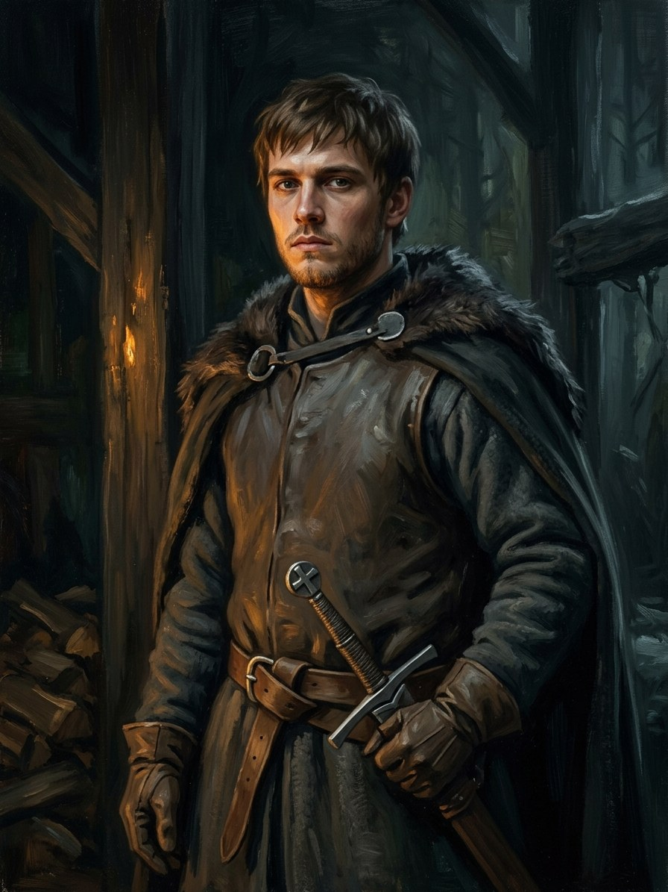

Günther von Hohenstein (invented Order brother)¶
Ryšiai
Ally: Kęstutis (1361–1362) — Saga: the honest enemy; translator and meal-bearer at Marienburg, Kaunas 1362.
Member of: Teutonic Order
Took part in: Kęstutis captured at Lake Ublik — The saga’s invention: the third knight; offers terms, Kęstutis refuses.
Günther von Hohenstein (invented Order brother)

Günther von Hohenstein (invented Order brother) · character¶
Tipas |
character |
Years |
c. 1331–? |
Status |
The saga’s invention |
Pastaba |
The saga’s invention. A young brother of the Order (22 in 1353) who shares a name with a real, older Osterode komtur (c. 1310-1380); the third knight at Lake Ublik, translator and meal-bearer at Marienburg 1361, at Kaunas 1362 (Book VI). NOT the 1381 informant: that was Kuno von Liebenstein. |
Summary¶
Günther von Hohenstein is the saga’s invention in Book VI: a young brother of the Teutonic Order (22 in 1353, about 30 in 1361), fluent in Lithuanian from a Curonian nurse of the Ragnit march, who asks to serve at Ragnit, is the third knight to take Kęstutis at Lake Ublik, carries and translates the prisoner’s meals at Marienburg, and stands at Kaunas in 1362. He is the honest enemy of the Order’s side. He is not the 1381 informant: that was Kuno von Liebenstein.
Appearance & tells¶
Fair-haired, with a childlike, puzzled face, „the face of people who have not yet worked out what faith costs“ (Book VI ch. 14, age 22); about thirty when he takes Kęstutis (ch. 16), where the bewilderment is still on him; he speaks Lithuanian in an old, soft Curonian dialect, so gentle his voice sounds almost womanly (ch. 19). He wears the Order’s white mantle, lowers his sword like a man who has not come to kill, gives his word, and asks to carry the prisoner’s meals himself. Tells: he repeats a sentence a third time; he admires and cannot bear it.
Want · Need · Lie · Truth¶
Want (external) |
To save lives by giving terms: to receive Kęstutis’s surrender and stop the killing. |
Need (internal) |
To find out whether the crusade is a faith or a ledger. |
Lie they believe |
That the Order’s cause and its terms are honest; that one honourable enemy can be reconciled to being an enemy. |
Truth they learn (or refuse) |
That Kęstutis cannot be bought or trusted by any word of his, since he will never say it unless he means it: “He did not swear. I begged.” (Book VI ch. 17). |
Arc by book¶
Book VI (1353-1362): at Kniprode’s feast he sits uneasy among the Order’s guests and says aloud that the heathen duke keeps every word (ch. 14, 1353); takes Kęstutis at Lake Ublik, offers terms and is refused (ch. 16, March 1361); asks to carry the prisoner’s meals and translates between the duke and the Grand Master (ch. 17, Marienburg); lifts Vaidotas out of the ruins at Kaunas and gives his word that women and children in the inner tower will be spared (ch. 19, Easter 1362).
Power & magic¶
Tier 0. No gift and no bargain: the saga uses him as proof that the Order is made of men and not only of the Iron Saint’s egregore. He is on the Order’s side of the line, and his one act of mercy is to speak Lithuanian.
Record vs saga¶
[Historical record]: A real Günther von Hohenstein, an Osterode komtur, is named as Danutė Kęstutaitė’s godfather in VLE. The novel’s young brother is an invented namesake, not that official’s documented biography. The novel’s ages, nurse, conversations and prison service are not established by this record. The 1381 informant is treated separately as Kuno von Liebenstein.
[The saga’s invention]: The young brother, his Lithuanian, his terms offered at Ublik, the meals and translation at Marienburg (Book VI ch. 14, 16, 17, 19).
Tarimas¶
GÜN-ter fon HO-en-štain (/ˈɡʏntɐ fɔn ˈhoːənʃtaɪn/), English respelling GUEN-ter fon HOH-en-shtine; the saga’s Lithuanian form is Günteris fon Hohensteinas.
Appearances¶
Book VI: ch. 14, 16, 17, 19 and the afterword. Not to be confused with Kuno von Liebenstein, the real 1381 informant who appears in Book I ch. 1.
Chronologija¶
Year |
Event |
Book |
|---|---|---|
1361-03-21 |
VI · Šventasis Miškas (priešistorė) |
Sąsajos¶
graph LR
ev_kestutis_captured_1361["Kęstutis captured at Lake Ublik"]
hohenstein["Günther von Hohenstein (invented Order brother)"]
kestutis["Kęstutis"]
teutonic_order["Teutonic Order"]
hohenstein -->|Member of| teutonic_order
hohenstein -->|Took part in| ev_kestutis_captured_1361
hohenstein -->|Ally| kestutis
style hohenstein stroke-width:3pxSee History and the Saga for the distinction between fictional namesakes and real officeholders.